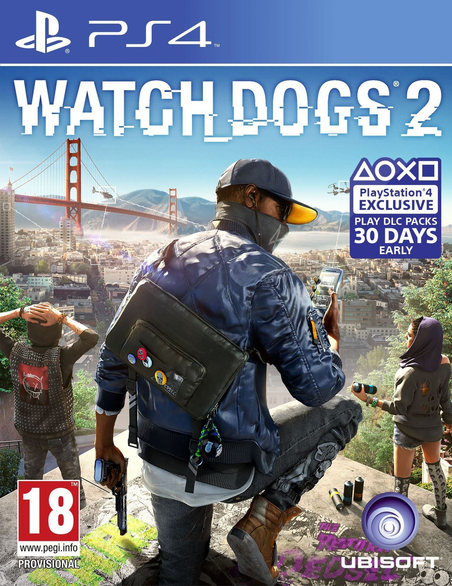

Watch Dogs 2 (estilizado como WATCH_DOGS 2) es un videojuego de mundo abierto y acción-aventura desarrollado por Ubisoft Montreal y distribuido por Ubisoft para las plataformas Microsoft Windows, PlayStation 4 y Xbox One. Es la secuela de Watch Dogs que fue lanzado a la venta el 15 de noviembre de 2016. Es de mundo abierto, sigilo y de disparos en tercera persona estando ambientado en la ciudad de San Francisco. El jugador encarna a Marcus Holloway, un hacker que se une al grupo hacktivista DedSec para descubrir y revelar al público los manejos del Sistema Operativo ctOS e investigar como el Estado y las empresas utilizan la información recolectada para controlar a la población.